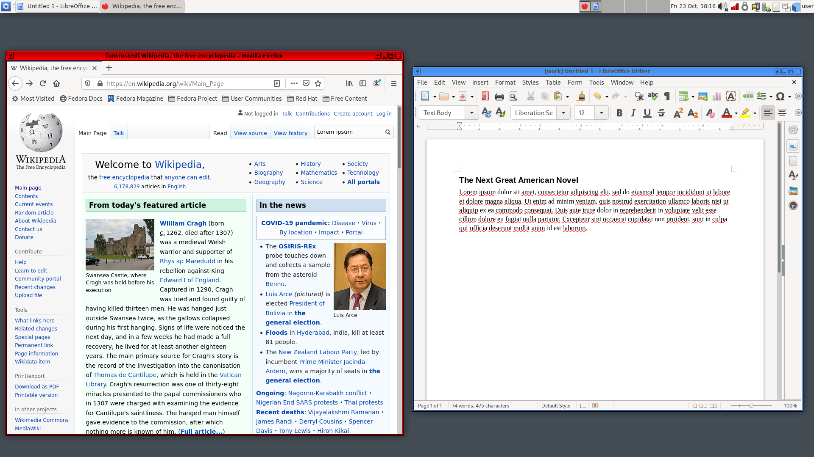
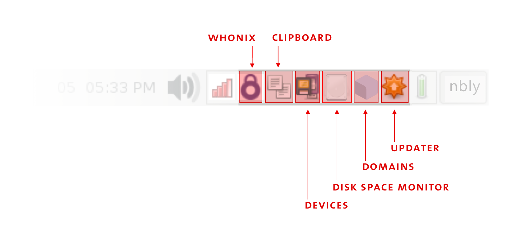
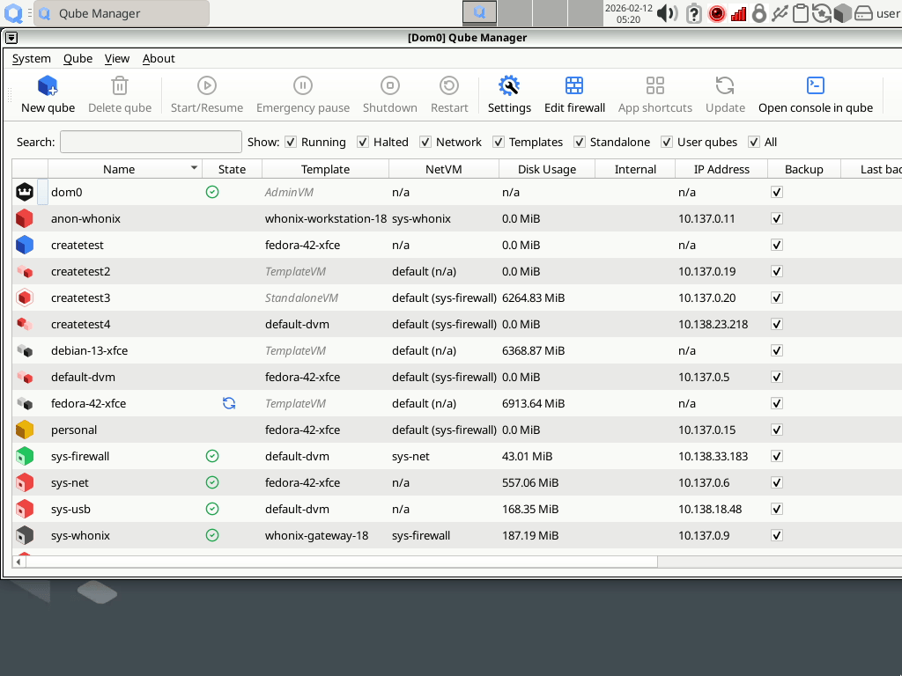

開始使用
After downloading and installing Qubes OS, it’s time to dive in and get to work! (Already know your way around? Dive right in to organizing your qubes.)
The Basics
Qubes OS is an operating system built out of securely-isolated compartments, or qubes. You can have a work qube, a personal qube, a banking qube, a web browsing qube, a standalone Windows qube and so on. You can have as many qubes as you want! Most of the time, you’ll be using an app qube, a qube for running software programs like web browsers, email clients, and word processors. Each app qube is based on another type of qube called a template. The same template can be a base for various qubes. Importantly, a qube cannot modify its template in any way. This means that, if a qube is ever compromised, its template and any other qubes based on that template will remain safe. This is what makes Qubes OS so secure. Even if an attack is successful, the damage is limited to a single qube.
Suppose you want to use your favorite web browser in several different qubes. You’d install the web browser in a template, then every qube based on that template would be able to run the web browser software (while still being forbidden from modifying the template and any other qubes). This way, you only have to install the web browser a single time, and updating the template updates all the qubes based on it. This elegant design saves time and space while enhancing security.
There are also some “helper” qubes in your system. Each qube that connects to the Internet does so through a network-providing service qube. If you need to access USB devices, another service qube will do that. There’s also a management qube that automatically handles a lot of background housekeeping. For the most part, you won’t have to worry about it, but it’s nice to know that it’s there. As with app qubes, service qubes and management qubes are also based on templates. Templates are usually named after their operating system (often a Linux distribution) and corresponding version number. There are many ready-to-use templates to choose from, and you can download and have as many as you like.
Last but not least, there’s a very special admin qube used to administer your entire system. There’s only one admin qube, and it’s called dom0. You can think of it as the master qube, holding ultimate power over everything that happens in Qubes OS. Dom0 is the most trusted one of all qubes. If dom0 were ever to be compromised, it would be “game over”- an effective compromise of the entire system. That’s why everything in Qubes OS is specifically designed to protect dom0 and ensure that doesn’t happen. Due to its overarching importance, dom0 has no network connectivity and is used only for running the desktop environment and window manager. Dom0 should never be used for anything else. In particular, you should never run user applications in dom0. (That’s what your app qubes are for!) In short, be very careful when interacting with dom0.
Color & Security
You’ll choose a color for each of your qubes out of a predefined set of colors. The color of the frame of each window on your desktop will correspond to the color of that qube. These colored frames help you keep track of which qube you’re currently using. You may use them to show how trustworthy it is. This is especially helpful when you have the same program running in multiple qubes at the same time. For example, if you’re logged in to your bank account in one qube while doing some random web surfing in a different qube, you wouldn’t want to accidentally enter your banking password in the latter! The colored frames help to avoid such mistakes.

Most Qubes users associate red with what’s untrusted and dangerous (like a red stop light signalling danger), green with what’s safe and trusted, and yellow and orange with things in-between. This color scheme also includes blue and black, commonly interpreted as indicating progressively more trusted domains than green, with black being ultimately trusted. However, color and associated meanings are entirely up to you. The system itself does not treat the colors differently - they’re all equally safe on their own. If you create two identical qubes — black and red, say — they’ll be the same until you start using them differently. Feel free to use the colors in the way that best meets your needs. For example, you might decide to use three or four qubes for work activities and give them all the same color — or all different colors depending on the nature of the task they are used for.
使用者介面
On operating systems like Windows and macOS, the desktop environment is unchangeable and part of that operating system. With Linux, any of a number of desktop environments are an option. Qubes OS is installed with XFCE as its default desktop environment, but it also supports KDE, as well as the window managers i3 and AwesomeWM.

The bar at the top of your screen in Qubes 4.2 includes the following XFCE component areas:
The App Menu, where you go to open an application within a qube, to open a dom0 terminal, to access administrative UI tools such as the Qube Manager, or to access settings panels for your desktop environment.
The Task Bar where buttons for open and hidden windows live.
Spaces, an interface for virtual desktops. Virtual desktops do not have any inherent security isolation properties, but some users find them useful for organizing things.
The Tray, where many functional widgets live.
There are several tray widgets that are unique to Qubes OS:
The Whonix SDWDate allows you to control the Tor connection in your sys-whonix qube.
The Qubes Clipboard lets you easily copy text between various qubes and from dom0.
The Qubes Devices widget allows you to attach and detach devices — such as USB drives and cameras — to qubes.
The Qubes Disk Space widget shows you how much storage you’re using. It’ll notify you if you’re ever running out of space.
The Qubes Domains widget allows you to manage running qubes, turn them on and off, and monitor RAM and CPU usage.
The Qubes Updater widget informs you when updates are available and helps you install them.

To learn more about how to customize your desktop environment, we recommend you go through XFCE’s documentation.
Qube Manager
To see all of your qubes at the same time, you can use the Qube Manager. It displays the states of all the qubes in your system, even the ones that aren’t running.
To access Qube Manager go to 
{kind=link}

命令行介面
All aspects of Qubes OS can be controlled using command-line tools such as the terminal emulator. The default terminal emulator in Qubes is Xfce Terminal. Opening a terminal emulator in dom0 can be done in several ways:
Using the application menu:
 .
.Press
Alt+F3and search forxfce terminal.Right-click on the desktop and select Open Terminal Here.
Various command-line tools are described as part of this guide, and the whole reference can be found here. Terminal emulators can also be run in other qubes as normal programs.
首次開機
When you install Qubes OS, a number of qubes are pre-configured for you:
App qubes such as
work,personal,untrusted, andvaultare your “starter pack” qubes to compartmentalize tasks and types of data to suit most basic needs. (There is nothing special about these pre-configured qubes - they are identical in nature to more specific ones you might wish to create later.)Templates:
fedora-XX,debian-XX(XXbeing the version number)Service qubes:
sys-usb,sys-net,sys-firewall, andsys-whonix)Admin qube:
dom0
Other software installed in Qubes OS by default includes open-source applications such as file managers, command-line terminals, printer managers, text editors, and applets for configuring audio and user interface settings. Most of these applications are incorporated within each template.
Adding, removing, and listing qubes
To create a new qube or remove one, use Create Qubes VM option in the App Menu.
Creating a new qube,  .
.
To remove a qube,  , where
, where <QUBE> is the qube you desire to delete.
To list qubes, use the Qube Manager.
You can also add, remove, and list qubes from the command line using the following tools:
qvm-create
qvm-remove
qvm-ls
我需要多少個 qubes？
It’s a good idea to start out with the pre-installed app qubes: work, personal, untrusted, and vault. If you start to feel that some activity just doesn’t fit into any of your existing qubes, or you want to partition some part of your life, you can easily create a new qube for it. You’ll also be able to easily copy any files you need to the newly-created qube.
Want to see some examples? Check out our in-depth guide on how to organize your qubes, which walks through several common use cases based on our user research and years of experience from veteran Qubes users.
Secure Habits
It is very important to keep Qubes updated to ensure you have the latest security updates. Frequently updating is one of the best ways to remain secure against new threats.
It’s also very important to make regular backups so that you don’t lose your data unexpectedly. The Qubes backup system allows you to do this securely and easily.
操作指南
Here are some basic tasks you’re likely to want to perform often that are unique to Qubes as a multi-environment system. A full list is available in the How-To Guides section in the docs.
If you encounter any problems, please visit the Help, Support, Mailing Lists, and Forum page.
相容的硬體
Make sure your hardware satisfies the system requirements, as Qubes OS cannot run on every type of computer. You may also want to check out Qubes-certified Hardware and take a look at the Hardware Compatibility List (HCL).
下載
Download an ISO, learn how to verify its authenticity, and follow our guide to install Qubes OS. Looking for the source code? You’ll find it on GitHub.
文件
Browse our extensive library of documentation for users and developers of Qubes OS. You can even help us improve it!